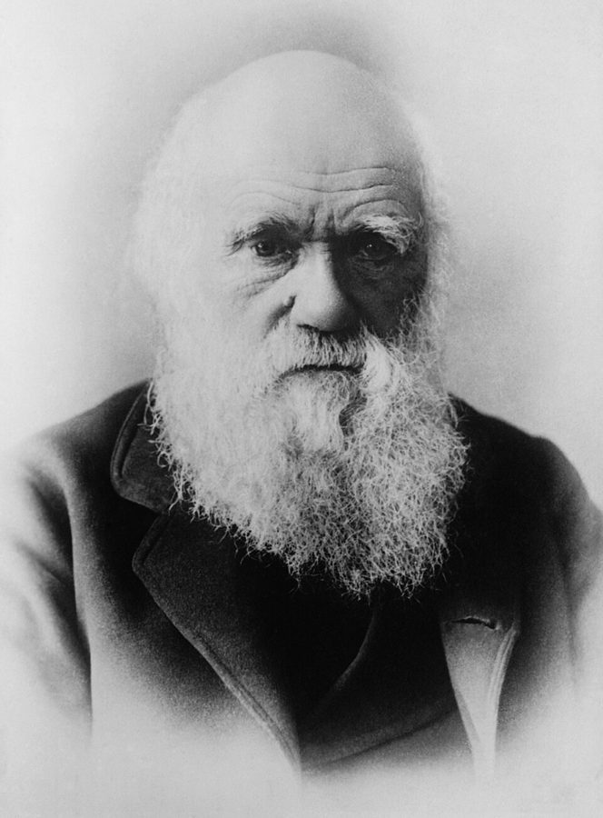
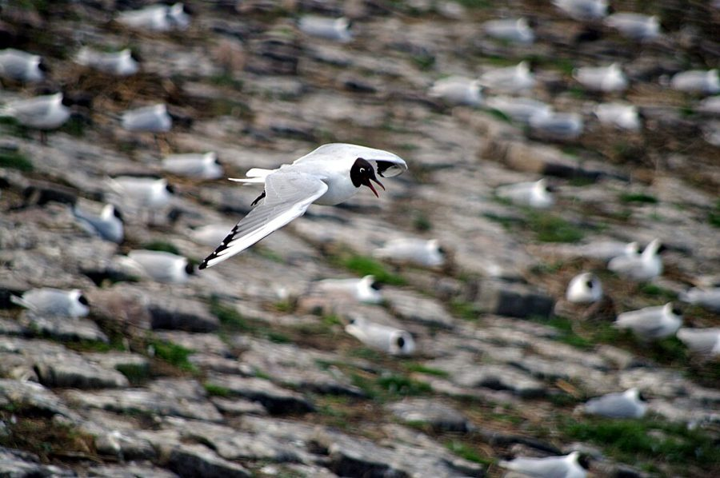
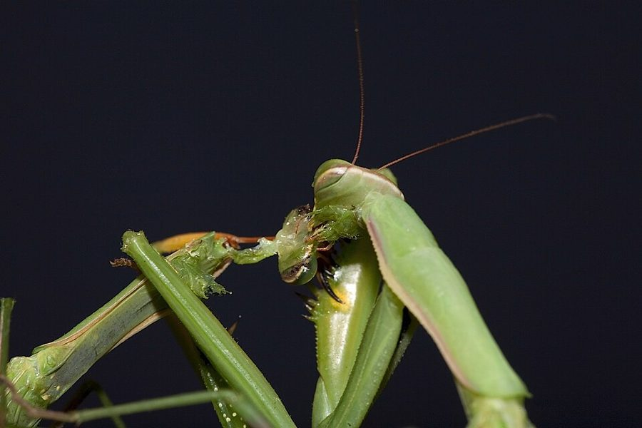
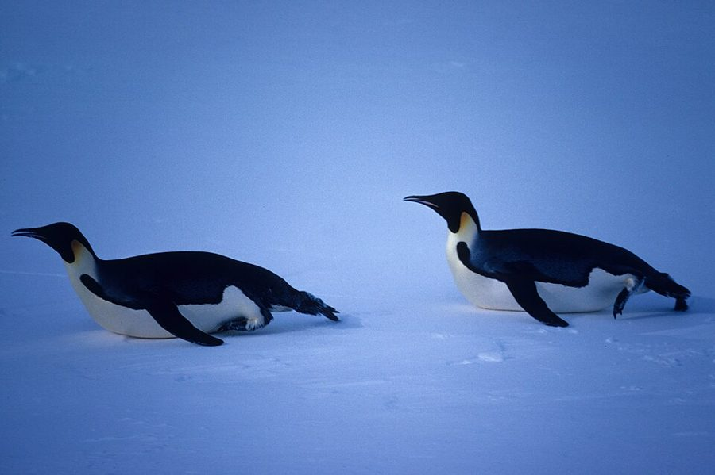
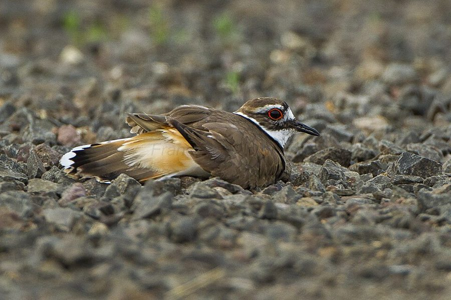
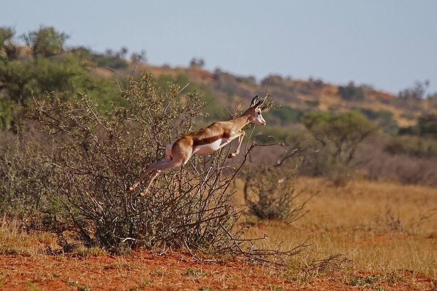
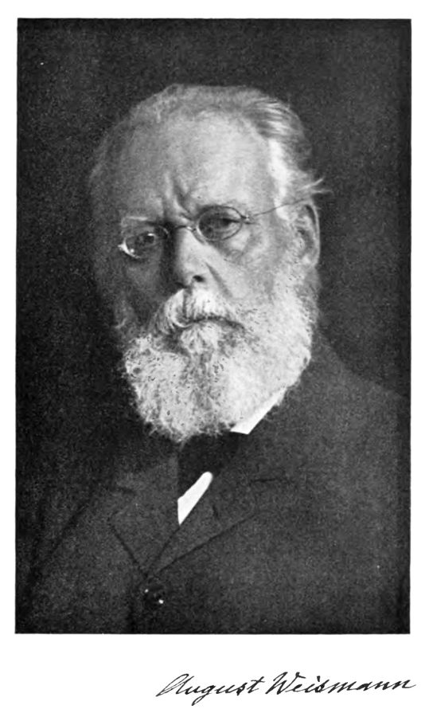

这一页在做什么
全书的开场。Dawkins 先交代这本书只拿进化论回答一个问题：自私和利他的生物学。他用一个「芝加哥匪徒」的类比立下全书的论点，接着划清这本书不讲什么，再给利他和自私下一个只看效果的定义，举几种动物作插图；最后拿「为了物种的利益」这种流行说法开刀，把选择的单位一路推到基因。读的时候抓两条线：他从基因的自私推到个体时加了哪些限定词，以及他反对的到底是哪一种「类群选择」。

达尔文（Charles Darwin），Elliott & Fry 照相馆 1874 年拍摄。这一章第 1 段说，他是第一个把「我们为什么存在」讲得有条理、站得住的人。Elliott & Fry，公有领域，维基共享资源 读之前：这一页在全书的哪里
这是正文的第一章，前面是 2006 年导言和三篇序。这一章许下的几个诺言，后面才兑现：第 4 段说「我们会看到」基因怎样在特殊情况下促成个体的利他，那是讲亲属的第 6 章和讲互惠的第 10 章；第 31 段答应以后解释瞪羚的跳跃，第 10 章回来讲；第 6 段说他对先天后天的看法只隐含在「最后一章」，指的是 1976 年版的最后一章，讲觅母的第 11 章。第 32 段末尾预告，论证要从生命的起源讲起，那就是第 2 章。另外先知道一件事：作者在 2006 年的导言里点名收回了这一章的一句话，就在 §2。
自私和利他，该在哪一层去解释：物种、群体、个体，还是基因？
读的时候带着这几个问题。不用先找答案，读完回来对照「检查一下理解」。
作者说成功的基因「无情地自私」。他是说动物和人也总是自私的吗？他在哪几个词上留了余地？§1
作者说这本书「不是」三样东西。你觉得他为什么要在论证开始之前先说这些？§2
工蜂蜇人后死去，按作者的定义算利他。他说不问动机，那他是凭什么算的？§3
「成员肯为群体牺牲的群体，不容易灭绝」，这句话听着有理。它错在哪一步？§4
这一页的路线
这一章是全书的序曲，走法是「先给结论定调，再划界，最后拆掉对手」。§1 用一个类比（知道一个人在什么环境里发达，就能猜他是什么样的人）推出基因该是自私的，紧接着就加限定。§2 一口气说了三个「不是」，中间夹着一段关于人类社会的感慨，全章争议最大的一句就在这里。§3 先下定义，再讲六个动物故事，他自己说这些只是插图，不是证据。§4 才转入正题：「为了物种」的说法怎么来的，个体选择论者会怎么驳它，顺手点名批评了一本教师指南、Lorenz、一档电视节目和 Ardrey。§5 开头会让人觉得跑题：工会、国家、鲸、胎儿和黑猩猩，那是在说人类伦理里「利他该到哪一层为止」本来就乱，生物学里也一样乱；接着用狮子和哺乳纲做归谬，最后才亮出基因。
论证
例子、插话
§1
§2
§3
§4
§5
匪徒类比
三个「不是」
生来自私 2006 年收回
只看效果
六种动物
为了物种
叛徒
英国工人
工会、国家
狮子和哺乳纲
基因
本站示意图。蓝点是论证主线，橙点是动物故事和作者对人类社会的插话；折线是阅读顺序。插话不是论证的一部分，但全章最常被引的两句话都在插话里。 作者落在哪： 看进化最好看最低的一层：选择的单位，因而也是「自利」的单位，是基因，不是物种、群体，严格说也不是个体。个体的自私和利他，都要从基因的自私推出来；「为了物种的利益」靠不住。
分节地图
这一页是原书第 1 章的第 1–5 节。原书各章没有小标题，粗体的节名是本站起的，下面是这一节第一段开头的几个词，在电子书里搜它就能跳过去。读完打个勾。
达尔文与芝加哥匪徒约 800 词 Intelligent life on a planet comes … 第 3 段点名三本书「完全错了」。第 4 段是全书论点的第一次陈述，留意 usually、special、limited 三个词。 这本书不是什么约 700 词 This brings me to the first point … 三个「不是」：不讲道德、不在先天后天之争里站队、不描述具体物种。第 5 段那句「生来自私」，作者 2006 年收回了。 利他和自私的定义与例子约 1200 词 Before going any further, we need … 第 8–10 段是定义：只看效果，实际只能说「表面上」。第 12–18 段是六个动物故事，第 19 段说它们只是插图。 「为了物种的利益」约 1000 词 This explanation is based on the misconception … 第 21 段介绍类群选择，第 22–23 段是个体选择论者的反驳。第 23 段有两句、第 21 段有半句，中译本没有。 该在哪一层讲利他约 1000 词 Perhaps one reason for the great appeal … 第 27–29 段是作者对人类伦理的议论，不是科学主张，第 27 段有两句中译本没有。第 32 段亮出基因，配注 4 读。
先用中文过一遍：这一页的概念
先把这一页用到、作者默认你懂的几个概念讲一遍。讲的是概念本身，作者拿它推出什么，读原书时自己看。后面几章要讲的生存机器 、基因 、复制因子与载体 ，这一章提到时可以点进去看。
§2 「是」与「应该」 is / ought 哲学里的一条老界线：说世界是什么样子，和说人应当怎样做，是两类话，单从前一类推不出后一类。休谟在 18 世纪指出了这一点；Moore 1903 年又把「用某种自然属性来定义好」叫作自然主义谬误。打个程序员的比方：性能分析报告说某个函数最耗时，这是事实；它并不告诉你该不该去优化、先改哪一个，那取决于你的目标。同样，「自然选择偏爱自私的基因」只是一句描述，从它推不出「人应该自私」，也推不出「人只能自私」。这两种推法，前一种是把描述当成了规范，后一种是把「天生的」当成了「改不了的」。
在这一页： 第 5 段划的就是这条界线（译本：「阐述对事物的认识同提倡事物」 ）。注 2 和 2006 年导言又为它辩护了两次。
§3 利他行为／自私行为 altruism / selfishness 日常说的利他看动机：心里想着别人。进化生物学的定义只看后果：一个行为让做的一方吃点亏、让另一个同类得点好处，就叫利他；反过来叫自私。动机不在考虑之内，所以蜜蜂、小鸟甚至细菌都可以「利他」。后果很难真算清楚，所以实际上常只能说「看上去」利他，细看可能是另一回事。今天的教科书算的多是对一生繁殖成功（适合度 ）的影响，而不只是能不能活下去，并把双方都得好处的合作另算一类，叫互利 。
在这一页： 第 8–10 段下定义，第 12–18 段是例子。后面各章讲利他时，算的多是基因拷贝的得失，不只是个体的死活。
§4 类群选择 group selection 认为自然选择主要在群体或物种之间进行的想法：哪个群体的成员肯为群体牺牲，这个群体就更不容易灭绝，于是世界上留下来的多是这种群体。1962 年 Wynne-Edwards 把它写成一本大书，用来解释动物为什么会自己限制生育。它的难处是「叛徒」：群体里只要出现一个不肯牺牲的，它的后代就比别人多（见下图）。今天还有一种更谨慎的「多层选择」理论，承认选择同时作用在个体和群体两层上，算的是两层得失的差，和这一章批评的「为了物种」不是一回事（见「对照今天」）。今天通行叫群体选择。
肯牺牲的个体
自私的叛徒
开始
几代以后
再过几代
本站示意图，数字是随手画的。叛徒占别人牺牲的便宜，活得更久、后代更多，后代又继承它的自私，几代之后这个「利他群体」就和自私的群体分不出来了。这是第 22 段作者替「个体选择论者」设想的回答。 在这一页： 第 21 段介绍，第 22–23 段是反驳，第 24–26 段是它流行的例子，第 30 段追问它到底选在哪一层。
§4 选择单位 unit of selection 自然选择总要「挑」某种东西：留下来的是什么，被淘汰的是什么。被挑的那一层，就是选择单位。候选有很多层：基因、个体、亲属、群体、物种。哪一层被挑，哪一层就会显得「自私」，只有在它之上的层次才谈得上为别人牺牲。所以问「动物为什么会利他」，先要问选择在哪一层。作者 1978 年以后把这个问题拆成两种单位：被复制、一代代传下去的（复制因子，实际上就是基因），和被选择直接作用、载着它们走的（载体，通常是个体）。这一章写于这个区分之前，读的时候心里先备着它。
纲（哺乳纲）
物种
群体
个体
基因
狮子该为哺乳纲不吃羚羊？第 30 段的归谬
「为了物种的利益」：教师指南、Lorenz
类群选择：Wynne-Edwards、Ardrey
个体选择：通常所说的正统
基因选择：作者偏爱的叫法，第 32 段
本站示意图。这一章依次检查了每一层：选择放在哪一层，哪一层就是「自私」的那一层。作者的答案在最下面。 在这一页： 第 21 段问「最适者」指哪一层，第 32 段给出作者的回答（译本：「选择的基本单位」 ）。
书里的人和研究
按在书里出现的顺序排，标题前是节号。只讲到读懂这一页需要的程度。
§1 达尔文和 Simpson 的「1859 年」第 1 段说，生物在地球上活了三十多亿年，才有一个弄明白了自己为什么存在，那就是达尔文；1859 年是《物种起源》出版的年份。作者接着引美国古生物学家 Simpson 的话：1859 年以前回答「人是什么」的一切尝试都毫无价值，最好全部忘掉。这句话出自 Simpson 1966 年一篇谈人的生物本性的文章。书出版后有读者（包括不信教的）觉得这句引语刺耳，作者 1989 年在注 1 里回应了这种不满。
Charles Darwin 1809–1882 英国博物学家，1859 年出版《物种起源》，提出自然选择学说。在这一页里是开场的主角。
George Gaylord Simpson 1902–1984 美国古生物学家，进化论「现代综合」的奠基人之一。在这一页里提供了那句「1859 年以前都毫无价值」。
§1 三本「完全错了」的书，和丁尼生的一句诗第 3 段点名的三本书，都是 1960 年代到 1970 年代初写给大众的书：Lorenz 的 On Aggression （1963 年德文版，1966 年英译）、Ardrey 的 The Social Contract （1970）、Eibl-Eibesfeldt 的 Love and Hate （1970 年德文版，次年英译）。作者说它们错在同一处：以为进化中要紧的是物种或群体的利益。人类学家 Montagu 批评 Lorenz 继承了 19 世纪「大自然的牙和爪都沾着血」那一派；作者觉得这很讽刺，因为照他的理解，Lorenz 和 Montagu 一样不接受这句诗的含义，而他自己倒认为这句诗把自然选择概括得很好。诗出自丁尼生 1850 年的长诗《悼念集》。Lorenz 的人物卡见第 5 章（上） 。
Robert Ardrey 1908–1980 美国剧作家、电影编剧，1960 年代起写人类起源和动物行为的通俗书。在这一页里是把类群选择推广给大众的人（第 21、26、31 段）。
Irenäus Eibl-Eibesfeldt 1928–2018 奥地利动物行为学家，Lorenz 的学生，后来专研人类行为的生物学。
Ashley Montagu 1905–1999 英国出生、在美国工作的人类学家，1968 年编过一本反驳 Lorenz、Ardrey 等人「人天生好斗」之说的文集《人与攻击》（Man and Aggression ）。
§3 自私的例子：黑头鸥、螳螂、帝企鹅
德国艾德河口的一片红嘴鸥（黑头鸥）繁殖地。巢挨着巢，第 12 段说的就是这种拥挤的集体营巢。Dirk Ingo Franke，CC BY-SA 2.0，维基共享资源 黑头鸥就是常见的红嘴鸥，繁殖季成群挤在一起筑巢。第 12 段说，趁邻居不在，把邻居刚孵出的雏鸟一口吞下，这种事「相当常见」。第 13 段是雌螳螂吃掉雄螳螂，先咬头；作者用了 it is possible：头里有抑制中枢，吃掉头也许反而让交配更起劲（野外的情形见「对照今天」）。第 14 段是帝企鹅在水边犹豫，谁都不肯先下水当试验品，作者用的是 reported，是听来的报道。

欧洲螳螂（Mantis religiosa）的雌虫正在咬雄虫的头颈。Oliver Koemmerling，CC BY-SA 3.0，维基共享资源 
两只帝企鹅在南极莫森站附近的冰缘上趴着滑行，1981 年 11 月摄。和书里说的水边犹豫不是同一个场面。Robert Ricker，NOAA，公有领域，维基共享资源 §3 利他的例子：工蜂、报警的小鸟、装断翅的亲鸟
北美的双领鸻在俄勒冈的碎石地上做「分散注意」的表演：趴低身子、张开尾羽。Francesco Veronesi，CC BY-SA 2.0，维基共享资源 第 16 段：蜜蜂的螫针带倒钩，工蜂蜇了敌人，内脏通常连着螫针一起被扯出来，不久就死。第 17 段：许多小鸟看见鹰会发出报警声，作者说有「间接证据」表明报警的鸟让自己更危险，所以「至少乍看」算利他。第 18 段：在地上筑巢的鸟见狐狸靠近，拖着一只翅膀假装受伤，把狐狸引离鸟巢，最后一刻飞走，这叫分散注意的表演（distraction display）。第 19 段作者自己说：挑出来的例子算不上证据，这些故事只是插图。
§4 Wynne-Edwards、一本教师指南和一档电视节目第 21 段说，类群选择长期被不熟悉进化论细节的生物学家默认为真，是 Wynne-Edwards 在「一本著名的书」里把它公开亮了出来。书没有点名，指的是他 1962 年的《动物的散布与社会行为》（Animal Dispersion in Relation to Social Behaviour ），主张动物会为了群体自我节制生育。第 24 段引的《纳菲尔德生物学教师指南》是 1966 年为英国中学高级程度（A-level）生物课编的教师用书。第 25 段的 BBC 节目讲澳大利亚的蜘蛛，作者没给出处。
V. C. Wynne-Edwards 1906–1997 英国动物学家，长期在苏格兰阿伯丁大学任教。类群选择最有名的倡导者，作者在第 7 章还会和他的种群调节理论正面交锋。
§5 Ryder 的「物种主义」和会手语的黑猩猩第 29 段借用了英国心理学家 Richard Ryder 的词 speciesism：只因为对方不是人，就给它低一等的道德待遇，Ryder 拿它类比种族主义。他 1970 年在牛津散发传单时造了这个词，后来经哲学家 Singer 的《动物解放》流行开来。同一段说「最近的实验证据」表明黑猩猩也许能学会某种人类语言，当时最有名的是 Gardner 夫妇从 1960 年代后期开始教黑猩猩 Washoe 美国手语。后来的争论见「对照今天」。
§5 瞪羚的跳跃
南非卡拉哈里的一只跳羚高高跃起。跳羚和书里的汤姆森氏瞪羚不是同一种，但也以这种四腿离地的高跳出名。Charles J. Sharp，CC BY-SA 4.0，维基共享资源 汤姆森氏瞪羚是东非草原上常见的小型瞪羚。遇到猎豹、狮子这类捕食者时，它们有时不马上逃，而是四腿绷直、原地高高弹跳，英文叫 stotting。第 31 段说，这和鸟的报警声相似：像是在提醒同伴，却把捕食者的目光引到自己身上。Ardrey 认为只有类群选择能解释它；作者承认自己有责任解释，答应后面再讲，那是第 10 章（上） 。
§5 Williams 和 Weismann：基因视角的两位前辈
August Weismann 的肖像，下面是他的签名。Linnean Society，公有领域，维基共享资源 第 32 段说，作者的信念深受 Williams 1966 年的《适应与自然选择》影响。这本书系统地批评了类群选择，主张能用低层次解释的，就不要用高层次去解释。更早的预兆来自 Weismann 的「种质连续性」：生殖细胞（种质）一代代往下传，身体由它发育而来，身体一生里的变化却传不回种质，也就传不给后代。那时还没有「基因」这个词，他已经把「传下去的东西」和「承载它的身体」分开了。
George C. Williams 1926–2010 美国进化生物学家，1966 年的书是批判类群选择的经典。1989 年的第二版序言说，基因视角是他和 Hamilton 在 1960 年代讲明的。
August Weismann 1834–1914 德国生物学家，1892 年写成《种质》，否定获得性状遗传。
词与短语
按节排，每节前面是分节地图里的节名。标着「每个字都认识」的，是熟词生义、习语和反话，最容易读错。灰色的那几个字是原句里的位置，在电子书里搜它就能找到。
§1 达尔文与芝加哥匪徒
comes of age
… life on a planet comes of age …
长大成人，成熟了
come of age 本指到了法定成年的年纪。全书第一句：一个星球上的智慧生命，弄明白自己为什么存在的那一天，才算成年。
dawned on
… the truth finally dawned on one …
（某人）终于想明白了
dawn on someone 是「渐渐被某人意识到」，主语是想法，不是人。那一个人就是达尔文。
had inklings of
… others had had inklings of the truth …
隐约察觉到
inkling 是模糊的感觉、苗头。作者先替达尔文的前人说句公道话：别人也隐约想到过，但第一个讲得有条理的是达尔文。
about as much open to doubt as
… about as much open to doubt as …
和……一样不容怀疑（几乎没有疑问）
句式是「X 可疑的程度，和地球绕太阳转差不多」，意思是几乎不可疑。不要读成「人们在怀疑」。
at one with
… be very much at one with Montagu …
和……意见完全一致
be at one with someone 是「与某人看法一致」，不是「和某人成为一体」。
nature red in tooth and claw
… sums up our modern understanding …
大自然的牙和爪都沾着血
丁尼生《悼念集》里的名句，常被用来形容残酷的生存竞争。作者偏说这句话把自然选择概括得很好，故意和 Lorenz、Montagu 两边都唱反调。
be entitled to
… we would be entitled to make …
有理由（做某事）
不是法律上的「有权」。这里是说：知道一个人在什么环境里发达，我们就有理由猜他是什么样的人。
a quick trigger finger
… toughness, a quick trigger finger, …
动不动就开枪
扣扳机的手指很快。和「强硬」「能招来忠心的朋友」一起，是作者随手列的黑帮老大的品质。
Chicago gangsters
… in the world of Chicago gangsters, …
芝加哥黑帮
作者的类比。比的是基因：活过激烈竞争的基因，可以预期有某些品质。注 2 说过，换成英国国教会的高层也一样，比的是「从处境推品质」这个推法，不是说人都是匪徒。
Much as we might wish to
… Much as we might wish to believe …
尽管我们很想……
much as 放句首是「尽管」，不是「和……一样多」。整句：尽管我们很想相信别的，普遍的爱、整个物种的福祉在进化上说不通。
§2 这本书不是什么
all too numerous
… all too numerous, who cannot distinguish …
多得令人遗憾
all too 是「实在太」，带着抱怨的口气。分不清「是什么」和「应该怎样」的人，在作者看来太多了。
what is the case
… belief in what is the case …
事实是怎样
哲学腔的说法，和后面的 what ought to be the case（应当怎样）对举，就是「是」与「应该」的区分，见上面的概念块。
it does not stop it being true
… it does not stop it being true.
它照样是真的
stop something being 是「阻止某事成为」。我们再怎么痛恨一件事，也不能让它变成假的。
we are born selfish
… because we are born selfish.
我们生来自私
全章最常被引的一句。作者 2006 年在导言里说它误导，请读者在心里删掉，见「值得停下来的句子」。
are up to
… our own selfish genes are up to, …
在打什么主意
be up to something 是「暗中在干什么（多半不是好事）」。这是拟人的说法，基因没有主意。
upset their designs
… chance to upset their designs, …
打乱它们的图谋
designs 复数在这里是「图谋、算计」，不是「设计」；upset 是「打翻、搅乱」。
As a corollary to
… As a corollary to these remarks …
由上面的话推出的一点
corollary 原是数学的「推论」。上一段说要教人利他，可见他并不认为天生的东西改不了。
nature versus nurture
… where you stand in the debate …
先天还是后天
英语里固定的说法，nature 指遗传，nurture 指养育和环境。作者说这本书在这场争论里不站队。
the final chapter
… present in the final chapter.
（1976 年版的）最后一章
写这句时全书只有 11 章，最后一章是讲文化复制因子的第 11 章（觅母）。第 12、13 章是 1989 年加的，和这里无关。
§3 利他和自私的定义与例子
behavioural, not subjective
… selfishness are behavioural, not subjective.
按行为算，不按主观感受算
原书 behavioural 是斜体，强调定义只看行为的效果。
presumed
… prospects of the presumed altruist …
被认为是（利他者）的
presumed 是「推定的」：还没证实，只是暂且这样称呼。作者在用词上留着余地。
apparently
… An apparently altruistic act is one …
表面上，看上去
apparently 在这里是「看起来像，未必真是」，不是「显然」。这是这一节的关键词，同一段就说细看常常是伪装的自私。中译本把它译错了，见译本勘误。
back is turned
… until a neighbour’s back is turned, …
（邻居）一不留神
字面「背转过去」，引申为「不在场、不注意的时候」。
go to the trouble of
… having to go to the trouble of …
费事去做
不是「惹麻烦」。吃邻居的雏鸟，省了自己去抓鱼的工夫，也不用离开自己的巢。
off its sexual stride
… body off its sexual stride.
打乱交配的节奏
throw someone off their stride 是「打乱某人的步调」。作者用平常的口气讲一件骇人的事，是他惯用的冷幽默。
reported
… with the reported cowardly behaviour of …
据报道的
一个限定词：帝企鹅的故事是听来的，作者没说自己看过，也没给出处。
the guinea pig
… wants to be the guinea pig, …
试验品
guinea pig 是豚鼠，常用作实验动物，引申为「被拿来试的人」。谁都不想当第一个下水试试有没有海豹的那只。
kamikaze fighters
… the stinging are kamikaze fighters.
敢死队员
kamikaze 是二战日本的「神风」自杀式飞行员。英语里泛指不顾性命的行动。
Laying down one’s life for one’s friends
… Laying down one’s life for one’s …
为朋友舍命
化用《圣经·约翰福音》15:13「人为朋友舍命，人的爱心没有比这个大的」。作者接着说，冒一点小风险也算利他。
at least at first sight
… at least at first sight, …
至少乍看之下
又一个限定：报警的鸟「似乎」冒了额外风险，证据是间接的。作者不说它一定是利他。
distraction display
… many ground-nesting birds perform a so-called …
分散注意的表演
动物行为学的术语，so-called 表示「人们所说的」。中译本作译本：「调虎离山计」 ，意思不错。
Chosen examples are never serious evidence
… Chosen examples are never serious evidence …
挑出来的例子从来算不上像样的证据
作者给自己的动物故事降格：它们只是说明他所说的利他、自私是什么意思。这句话也适用于整本书里的动物故事。
§4 「为了物种的利益」
it is but a further short false step
… it is but a further short …
只要再错走一小步
but 在这里是「只、仅仅」（= only），不是「但是」。作者在描述错误是怎样一小步一小步滑出来的。
a pawn in the game
… regarded as a pawn in the …
棋局里的一个卒子
如果竞争发生在物种之间，个体就是可以随时牺牲的小卒。
sacrified
… to be sacrified when the greater …
牺牲
原书的错字，应为 sacrificed。屏幕上就是这样，搜的时候照抄。
brought out into the open
… brought out into the open in …
公开亮出来
字面「带到露天里」。之前它只是很多生物学家心照不宣的默认，Wynne-Edwards 的书第一次把它明确写成理论。
might go something like this
… might go something like this.
大概会这样说
这一段和下一段是作者替「个体选择论者」设想的回答，口气是转述，不是他自己宣布的定论。
cut and thrust
… rapid cut and thrust of individual competition.
你来我往的激烈交锋
原是剑术的「劈和刺」，引申为针锋相对的争斗。和群体缓慢的灭绝对比。
the working people of Britain
… to the working people of Britain?
英国的劳动者
这句反问是 1975 年英国通胀、加薪诉求高涨时的插话。中译本删掉了这句和本段最后一句；作者 1989 年在注 2 里说，这句话如今招来的联想让他遗憾，但论点不收回。
evolution is blind to the future
… evolution is blind to the future.
进化看不见未来
本段的结论：自然选择只奖励眼下活得好、生得多的，不会为群体的长远利益留后手。中译本没有这一句。
commands little support
… theory now commands little support within …
得不到多少支持
command 在这里是「博得、享有」（command respect），不是「命令」。
come up from school
… when they come up from school, …
从中学升上大学
英式说法，go up / come up 指进大学（尤其牛津、剑桥），离开大学是 go down。
hardly to be blamed
… they are hardly to be blamed, …
怪不得他们
hardly 是「几乎不」，不是「努力地」。学生在中学就被这么教，怪不到他们头上。
blissfully ignorant
… is blissfully ignorant of the fact …
浑然不觉（还挺自在）
反话：「无知得很幸福」，讥讽那位作者说了有争议的话却毫无察觉。不要读成「幸而」。
in Nobel Prize-winning company
… in Nobel Prize-winning company.
和一位诺贝尔奖得主为伍
company 是「同伴」。反话：犯同样错误的还有大人物，下一句点名 Lorenz。
a gem of a circular argument
… a gem of a circular argument, …
一个绝妙的循环论证
a gem of a … 是「极好的一个……」，这里是挖苦：说攻击的功能是让最适者繁殖、从而保存物种，等于拿结论当前提。
otherwise excellent
… on an otherwise excellent B.B.C. television …
除此之外都很出色的
otherwise 是「在其他方面」。作者先夸节目，再挑出那一句毛病。
did his homework
… Ardrey at least did his homework.
下过功夫，做足了准备
字面「做了家庭作业」。作者对 Ardrey 有一句真心的称赞：他知道正统理论是什么，是有意唱反调。
strayed from the path of animal righteousness
… strayed from the path of animal …
偏离了动物的正道
化用宗教说法 the path of righteousness（义路）。作者在调侃 Ardrey 把人类看成堕落的动物。
§5 该在哪一层讲利他
trade unionism
… a basis of trade unionism.
工会主义
群体内部利他、群体之间自私的一个例子。这句和本段后面「被鼓励去杀别国的人」那句，中译本都没有。
fellow feeling
… object of our fellow feeling.
同类之情，同情心
fellow 是「同伴」。这里说人们开始把全人类当作同情的对象。
countenance
… we cheerfully countenance the shooting …
（坦然）容许、默许
countenance 作名词是「面容」，作动词是「赞同、容忍」。整句：我们很乐意容许不经审判就射杀相当温和的害兽。
speciesism
… to use Richard Ryder’s term, …
物种主义
Ryder 仿照 racism 造的词：只因不是同一个物种，就区别对待。作者说他不知道能不能给它找到比种族主义更站得住的伦理基础，只知道进化生物学不支持它。
It is all very well for me
… It is all very well for me …
（这样说）倒是容易，可是……
it is all very well to … but … 是「……固然好，但问题没解决」，先让一步再转折。不是「对我很有利」。
reductio ad absurdum
… to argue by reductio ad absurdum, …
归谬法
拉丁文：把对方的前提推到荒谬的结论，以此驳倒它。指上一段狮子和哺乳纲的例子。
goes so far as to
… Ardrey goes so far as to say …
竟然说到……的地步
表示对方的话说过头了，不是「走得很远」。
stotting Tommies
… explain stotting Tommies and all similar …
跳跃的汤氏瞪羚
Tommies 是 Thomson’s gazelles（汤氏瞪羚）的昵称。英国人平时说 Tommies 多指英国大兵，这里和大兵无关，别读岔了。
in pre-gene days
… Weismann in pre-gene days at the …
在还没有「基因」这个概念的年代
Weismann 的种质学说在 19 世纪末，「基因」这个词 1909 年才出现。
in substance, orthodox
… it is, in substance, orthodox, …
实质上是正统的
前面是 I hope：他希望懂行的人明白他的意思后，会同意这只是正统理论换了一种陌生的说法。注意这是希望，不是宣布。
译本勘误
对着中译本（40 周年增订版）读的时候看这一节。下面是译本这几节和这一页尾注里会让人读错的地方：灰字是英文原文那一处的几个词，在英文电子书里搜它；方框里是译本的原句，在译本电子书里搜它。措辞别扭但意思没错的不收。全书的勘误汇总在译本勘误 。
§2 文化只有一样，不是「文化」加「继承」误译 … by influences learned and handed down.
译本：「只有人类受文化也受后天获得的」
原文说人类独特地受文化支配，并用「学来的、代代传下来的影响」来解释什么是文化。译本拆成了几样东西，「继承下来的」容易读成遗传，这一段讲的正好是先天和后天之分，读反了就乱了。
§2 「最后一章」是第 11 章，不是第 13 章数字 … present in the final chapter.
译本：「只在第13章中」
1976 年写这句时全书只有 11 章，最后一章是讲觅母的第 11 章，作者说他对文化的看法隐含在那里。第 13 章是 1989 年加的，讲延伸的表型。
§3 apparently 是「表面上」，不是「明显」译反 … qualify it with the word …
译本：「我们必须用“明显的”这个词」
原文的意思是看起来像利他，细看未必是，所以下一句说「常常是伪装起来的自私」。译成「明显的」，把不确定变成了确定。第 11、15、31 段的「明显的」也都应读作「表面上」。
§4 漏了类群选择为什么流行漏译 … long assumed to be true by …
译本：「在其一本著名的书中公之于世的」
这一句前面原文还有半句：类群选择长期被不熟悉进化论细节的生物学家默认为真。这是作者对它的定性，第 24 段的教师指南和 Lorenz 就是例子。
§4 删掉了「英国工人」那一句漏译 … have been said in recent years …
译本：「从而避免整个群体的毁灭」
这一句后面原文还有一个反问：这番「要克制贪婪」的话，近年对英国工人说过多少次？作者 1989 年在注 2 里专门谈了这句话，译本的注 2 照译了，正文却找不到它。
§4 删掉了本段的结论漏译 … evolution is blind to the future.
译本：「仍可获得短期的繁荣」
这一句后面原文还有一句：英国公民有没有远见且不论，进化对未来是瞎的。这是整个反驳的落点：自然选择不会为了群体的长远利益而保留利他者。
§4 「幸而」读反了口气误译 … is blissfully ignorant of the fact …
译本：「幸而根本没有意识到」
blissfully ignorant 是讽刺：那位作者说了有争议的话，自己却浑然不觉，还挺心安理得。不是「幸亏没意识到」。
§4 Ardrey 是有意唱反调，不是「充分论证」误译 … theory was a conscious one, …
译本：「唱反调是经过充分论证的」
原文只说 Ardrey 知道正统理论是什么，反对它是有意识的选择，作者为此给他记一功。作者并不认为他论证得充分，前后都在批评他。
§5 删掉了「工会」那一句漏译 … a basis of trade unionism.
译本：「同群体之间的自私行为并行不悖」
这一句后面原文还有一句：这是工会主义的一个基础。第 30 段又拿工会会员和士兵作例子，译本读者会不知道工会从哪里来。
§5 「应为国家牺牲」不是作者的主张误译 … young men are expected to die …
译本：「青年人作为个体应为国家整体」
原文是「年轻人被期望为国捐躯」，描述社会的要求。译本的「应」读起来像作者在主张，正好撞上这一章「讲是什么、不讲应该」的界线。
§5 删掉了「被鼓励去杀别国的人」漏译 … encouraged to kill other individuals …
译本：「令人费解的是，在和平时期号召人们」
这一句前面原文还有一句：年轻人还被鼓励去杀死别的人，只因为对方属于另一个国家。群内利他、群间敌对的例子，译本只留了前一半。
§5 是「温和的害兽」，不是「供观赏的动物」误译 … of fairly mild animal pests.
译本：「相当温顺的供观赏的动物」
pests 是害兽、有害动物，mild 是「危害不大」。作者的对比是：许多人不忍处决最可怕的罪犯，却坦然接受不经审判就射杀危害不大的害兽。前面的「鼓励」也说重了，原文是容许、默许。
§5 黑猩猩「也许能」学会语言，不是「证明能」误译 … may even be capable of learning …
译本：「最近的试验证明，黑猩猩甚至能够学会」
原文是 may even be capable，「甚至也许能」。译本丢了这个限定词，说成已被证明。后来的研究对此争议很大，见「对照今天」。
§5 是敌对群体之间，不是群体内部误译 … members of rival groups being nasty …
译本：「对于群体成员之间因竞争而相互交恶的情况」
原文说：敌对群体的成员彼此不友好，连类群选择论者也不奇怪，因为这是在替自己的群体争资源。译本读起来像群体内部互相交恶，那正好和类群选择的预测相反。
§5 「说说容易」，不是「对我有利」误译 … It is all very well for me …
译本：「当然对我很有利」
it is all very well … but 是习语：用归谬法挑对手的毛病固然容易，但个体表面上的利他仍然需要解释。作者是在自我节制，不是在说归谬法对他有利。
§2 尾注 2：社会生物学，不是社会学术语 … Sociobiology: The New Storm in a Teacup
译本：「《社会学：茶杯里的新风暴》」
sociobiology 是社会生物学：用进化论解释动物和人的社会行为，E. O. Wilson 1975 年的书让这个词出名。和社会学（sociology）是两回事。
§2 尾注 2：Athenaeum 是伦敦的俱乐部误译 … or been elected to the Athenaeum.
译本：「或者一个被选入雅典娜神庙的人」
the Athenaeum 是伦敦一家老牌的绅士俱乐部，会员多是学者、主教、高官，要选举才能入会。作者举它和国教会高层，是说换成体面人发达的环境，比喻一样成立。
§5 尾注 4：是「整类生物」，不是「有机体的组合」误译 … whole classes of organisms may be …
译本：「整个有机体的组合」
classes of organisms 指一大类生物（比如某种身体构造的动物），不是几个个体凑成的组合。作者说：不仅有的个体更会活，有的整类生物可能更「会进化」。
§5 尾注 4：被选择的是「便于进化的胚胎发育方式」误译 … for embryologies that lend themselves to …
译本：「使其本身更适应进化」
原文是：可能存在一种更高层的选择，偏爱那些便于进化的胚胎发育方式，也就是对「可进化性」的选择。译本的句子主宾不清，读不出被选的是什么。
值得停下来的句子
Let us try to teach generosity and altruism, because we are born selfish.— §2 第 5 段。本站译：让我们试着去教人慷慨和利他，因为我们生来自私。
全书被引得最多的一句，也是作者自己收回的一句。1976 年读，它像是在说人性：人天生自私，好品质要靠后天灌输。30 年后的导言说，教人慷慨利他没有错，错在「生来自私」；他给的部分解释是，当年（1978 年以前）他还没想清楚复制因子和载体的区分。照这个区分，自私的是基因，被选择、被复制的那一层；生下来的个体不是基因，基因的自私完全可能造出天生会照顾亲属、会合作的个体。他请读者在心里删掉这句和类似的句子。关键词是 born：它把「基因自私」偷换成了「个体天生自私」。
… the fundamental unit of selection, and therefore of self-interest, is not the species, nor the group, nor even, strictly, the individual.— §5 第 32 段。本站译：……选择的基本单位，因而也是自利的基本单位，不是物种，不是群体，严格说来甚至也不是个体。
这是全书的主张，口气是认真的宣言。要留意两个词：and therefore，「自利」是从「被选择」推出来的，书名里的 selfish 指的就是这个，不是动机；strictly，「严格说来」，承认平常说个体被选择也没大错，只是不够精确。后半句（下一句）才说出答案：基因。
作者 1989 年的尾注
正文里的星号是 1989 年第二版加的，点了跳到书后的尾注。下面是这一页的每个星号：注里说了什么，值不值得现在就点开。英文是星号前紧挨着的几个词，在电子书里搜它就能找到那个星号。
§1 Simpson 那句话太狂妄了吗回应批评 … better off if we ignore them completely.*
有人（包括不信教的人）嫌这句引语粗鲁、偏狭。作者承认乍听确实刺耳，但不退让：宗教的答案先放一边（他说他都知道，不必写信来），1859 年以前对「人是什么」「人生有意义吗」的回答，除了历史价值，今天还剩什么？他承认这份历史价值不小，但那些答案就是错了。注很短，可以跳过。
§2 不提倡自私，基因也不「决定」一切回应批评 … advocating a morality based on evolution.*
回应两种误读：以为书在鼓吹自私；以为书说自私是天性、改不了。作者说基因只在统计意义上「决定」行为，像晚霞预示晴天，没人会为它押大注。芝加哥匪徒比的是基因，不是人。最后他说，1989 年重读第 23 段对英国工人那句很不舒服：那是 1975 年工党政府对付通胀时写的，如今听着像托利党；他遗憾这种联想，但不收回论点。值得读。
§3 石蛾的头补充 … sexual performance by eating his head.*
一则趣闻：作者第一次听说这件事，是在同事讲石蛾的报告会上。同事说怎么也没法让笼养的石蛾交配，前排的昆虫学教授咕哝了一句，好像这是最不该忽略的事：试过把它们的头剪掉吗？注里没有新的证据，可以跳过。
§5 基因之上，也许还有一种选择改口 … the gene, the unit of heredity.*
部分改口。作者说写下这篇「基因选择宣言」以后，他重新想过：漫长的进化里，也许偶尔还有一种更高层的选择。他赶紧声明这和类群选择无关：有的整类生物可能更「会进化」，因为某种胚胎发育的基本方案为后来几百万年的分化打开了闸门。这种选择仍要通过基因起作用，他叫它对「可进化性」的选择，还说它可能是累积的、有方向的，类群选择却不是。值得读。
读完：作者到底说了什么
读完这一页的几节再看。下面是作者在这几节里的论点，由本站按论点重新组织，不按原书的顺序；每条下面是依据所在的段落，拿不准就回书里那几段再读一遍。
选择的单位是基因，不是物种、群体，严格说也不是个体 作者主张最好在最低一层看选择：基因是选择的单位，因而也是「自利」的单位。他承认有人会觉得这很极端，但希望懂行的人明白他的意思后，会同意它实质上是正统的，只是说法陌生；思路受 Williams 影响，Weismann 已有预兆。（1989 年的注 4 补了一种偶尔起作用的更高层选择，选的是「可进化性」，他强调与类群选择无关。）
§5 第 32 段，注 4 成功的基因可以预期是自私的；个体通常也自私，特殊情况下有限地利他 从基因在激烈竞争中存活了很久这一处境，推断它们的主要品质是无情的自私（匪徒的类比，比的是基因）。基因的自私「通常」带来个体的自私，但在「特殊」情况下，促成「有限」的个体利他更能达到基因的目的；普遍的爱和整个物种的福祉，在进化上说不通。这是预期，不是观察：看到真正的利他，就是需要解释的谜。
§1 第 4 段，§2 第 7 段 这是描述，不是道德主张；遗传的东西也不是改不了 作者讲的是事物怎样进化而来，不是人应当怎样做；要从书里取教训，就当作警告：想要慷慨合作的社会，别指望生物天性帮忙，得去教。他说遗传的特征不一定改不了，人受文化支配独一无二，在先天后天之争里他不表态。（2006 年的导言收回了这里的「我们生来自私」，说它误导；他给的部分解释是，当年还没想清楚载体和复制因子的区分。）
§2 第 5–6 段 利他和自私只按效果定义，而且只能说「表面上」 定义只看一个行为让双方的生存机会升还是降，不问动机。效果很难证明，所以实际只能说「表面上」利他；细看常发现是伪装的自私，指的是效果，不是动机。他举的动物故事只是插图，他自己说挑出来的例子不是证据。
§3 第 8–10、19 段 「为了物种的利益」靠不住 类群选择设想肯牺牲的群体更不易灭绝。作者借个体选择论者之口说：群里一个叛徒、或从邻群迁入的自私者，几代后就会占满；群体灭绝比个体竞争慢得多，进化看不见未来。他还追问：选择若在群体、物种之间，为何不在纲、门之间？他说这种理论在懂行的专业生物学家里支持者很少，直觉上却很吸引人；他猜（perhaps）原因之一是它合乎多数人的道德和政治理想。
§4 第 21–24 段，§5 第 27、30 段
合起来： 这一章立了靶子，也立了规矩：靶子是「为了物种」，规矩是按效果谈利他、只描述不说教。选择单位一旦放到基因，后面各章都是同一个问题的变奏：自私的基因在什么条件下，会造出肯帮别人的个体。
对照今天
这本书 1976 年出版。下面挑出这一页里能被后来的研究检验的说法，分「书里 / 当时 / 今天」三栏，并给一个结论。结论判的是标题里「书里的说法：」后面那一句。全书的这一节汇总在对照今天 。
成立 后来的研究支持这句话。部分成立 大方向对，细节或适用范围要改。被改写 后来的研究推翻了它，或者换了一种说法。有争议 学界至今没有定论，两边各有代表性的研究。书里的说法：在懂进化的专业生物学家里，类群选择的支持者很少
书里 类群选择直觉上很吸引人，但在懂进化的专业生物学家里支持者很少（§4 第 24 段）。
当时 Williams 1966 年的书和 Maynard Smith 1964 年的模型之后，「为了物种」的解释在专业圈里基本失势，作者的说法符合 1970 年代的情况。
今天 朴素的「为了物种」至今少有人支持。但「多层选择」在 1990 年代复兴：Sober 和 D. S. Wilson 1998 年出版 Unto Others ，D. S. Wilson 和 E. O. Wilson 2007 年主张用它作社会生物学的基础。2010 年 Nowak、Tarnita 和 E. O. Wilson 在《自然》上撰文否定亲缘选择理论，第二年 137 位学者联名反驳。许多理论家认为两种算法在数学上常可互相换算，争的多是哪一种更好用。核对于 2026-10。依据：Wilson & Wilson, Quarterly Review of Biology 82 (2007)；Nowak 等, Nature 466 (2010)；Abbot 等, Nature 471 (2011)。
另一边 West、Griffin 和 Gardner 2007–2008 年在《进化生物学杂志》上认为，群体选择的说法不是错，而是不好用、常造成混乱。作者自己在 1989 年的注 4 里也松了口：可能有一种偶尔起作用的更高层选择，但他强调那不是类群选择。
书里的说法：雌螳螂一有机会就把雄的吃掉，先咬头；吃头也许还让交配更起劲
书里 雌螳螂有机会就吃雄的，从头开始；头里有抑制中枢，吃掉头「有可能」改善雄性的交配表现（§3 第 13 段，作者用的是 it is possible）。
当时 主要依据是 Roeder 1935 年的实验室研究：去掉头（咽下神经节里的抑制中枢）的雄螳螂，交配动作反而更强烈。
今天 去头能解除抑制，这个生理发现站得住。但同类相食远不是每次都发生：Lawrence 1992 年在野外观察欧洲螳螂，被吃的雄性约占三成。Liske 和 Davis 1980 年代用无人在场的录像观察中华大刀螳，发现不受打扰时雄性有完整的求偶，早年实验室里的高比例可能和喂食、观察者在场有关。频率在物种之间差别很大，有的物种几乎没有。核对于 2026-10。依据：Roeder, Biological Bulletin (1935)；Lawrence, Animal Behaviour 43 (1992)；Brown 等, PLOS ONE (2012)。
书里的说法：最近的实验证据表明，黑猩猩也许能学会某种人类语言
书里 黑猩猩有感受、会思考，「据最近的实验证据」甚至也许能学会某种形式的人类语言（§5 第 29 段，作者用的是 may even）。
当时 Gardner 夫妇从 1960 年代后期教黑猩猩 Washoe 美国手语，报告它学会了上百个手势，还能把手势连起来用。
今天 Terrace 等 1979 年在《科学》上发表黑猩猩 Nim 的研究，看录像后认为它的「句子」多是在模仿老师刚打的手势，看不出句法。后来 Savage-Rumbaugh 等 1993 年报告，倭黑猩猩 Kanzi 不经训练就能听懂许多新的英语口语句子。今天的多数看法是：猿能学会大量符号并用来交流，能不能算掌握了语言的语法，仍有争议。核对于 2026-10。依据：Terrace 等, Science 206 (1979)；Savage-Rumbaugh 等, Monographs of the Society for Research in Child Development 58 (1993)。
本站怎么看
读完作者的论点，再看它站不站得住。每一块摆出三样：主流怎么看，作者怎么看，本站的评论。最后一句是本站对这一页的总体判断。
「我们生来自私」，错在哪一步
主流看法： 哲学家 Midgley 1979 年在《哲学》杂志上批评这本书，说基因无所谓自私不自私，就像原子无所谓嫉妒。今天的进化生物学普遍把「哪些基因被选中」和「个体怎样行事」分开：亲缘选择、互惠，正是基因层面的「自私」造出个体层面真正利他的途径。
作者的看法： 1976 年说基因的自私「通常」带来个体的自私，所以人生来自私、要靠教（第 4–5 段）。2006 年导言说「生来自私」误导，请读者删掉，他给的部分解释是 1978 年前没想清楚载体和复制因子的区分；他还说书名也可以叫《不朽的基因》。
本站的评论： 这次自我修正很漂亮，也点出了全章最弱的一环：从基因到个体那一步，只靠一个 usually 撑着。基因的「自私」是说哪些拷贝留下来，个体是否自私，要看这些基因造出了什么行为，这正是后面几章要算的。读这一章时，把讲「个体自私」的句子都打个问号，把「基因自私」当作比喻的简写。
类群选择真的被这一章驳倒了吗
主流看法： 「为了物种」的朴素版本，在 Williams 和 Maynard Smith 1960 年代的工作之后基本被放弃，叛徒论证至今是教科书的标准说法。多层选择论者则认为，群体之间差异大、迁移少时，群体层面的选择可以起作用。
作者的看法： 借个体选择论者之口：叛徒会占满、迁入挡不住、群体灭绝太慢；再用狮子和哺乳纲做归谬，问选择凭什么停在群体那一层（第 22–23、30 段）。
本站的评论： 叛徒论证对「为了物种」那一版是致命的，今天仍然成立。狮子的归谬就不太公平：认真的类群选择论者并不说每一层的选择一样强，而是问什么条件下哪一层的差异够大。作者自己在注 4 里也承认可能有某种高层选择。所以这一章打倒的是较弱的对手；更强的版本后来以多层选择的面目回来了，见「对照今天」。
说不谈道德，却谈了不少道德和政治
主流看法： 「是」推不出「应该」，这是哲学的共识。但一本科学书怎样被读，作者控制不了，书名和措辞都会招来误读；1970 年代围绕社会生物学的论战就是这样。
作者的看法： 第 5 段声明不讲道德；第 23、27–29 段谈了英国工人、工会、国家和物种主义。1989 年注 2 说重读这些政治插话很不舒服，科学书最好不带。2006 年导言回应 Steven Rose 把这本书和撒切尔主义挂钩的批评，引 Maynard Smith 的反问：难道要我们篡改方程吗？
本站的评论： 原则上作者站得住：描述性的科学推不出价值，而且他明说书里若有教训，是一个警告，这比许多人以为的更「反自私」。可他在同一章里自己就把生物学和英国政治拴在了一起，读者把书读成政治口号，他也有一份责任，注 2 里他也认了。第 23、27–29 段，当作 1975 年一位英国学者的随笔读就好，它们不是论证的一部分。
本站的总体看法： 这一章值得带走两件工具：按效果定义利他，和「选择在哪一层」这个问题；叛徒论证至今有效。要打折扣的是从基因直接滑到「人生来自私」的那一步（作者自己收回了），以及对类群选择的归谬：它驳倒了「为了物种」，没有驳倒后来的多层选择。
检查一下理解
先在心里答，再点开。答错的那题，回书里把对应那一节再读一遍。
1.（§1）芝加哥匪徒的类比，比的是谁？作者从中推出了什么，又留了什么余地？ 比的是基因：在激烈竞争里存活了很久的基因，可以预期是无情自私的。余地在「通常」「特殊」「有限」三个词上：基因的自私通常带来个体的自私，但在特殊情况下会促成有限的个体利他。
2.（§2）「我们生来自私」这句，作者后来怎么说？他收回的是哪一半？ 2006 年的导言说「生来自私」误导，请读者在心里删掉：当年他还没分清复制因子（基因）和载体（个体），基因自私不等于个体生来自私。「要去教人慷慨和利他」这一半，他说没有错。
3.（§3）一只鸟看到鹰就报警，结果自己更容易被盯上。按作者的定义，它算利他吗？ 按效果算，不问动机：如果报警让它自己更可能死、让同伴更可能活，就算利他。作者说有间接证据表明它冒了额外风险，所以「至少乍看」算利他；细看效果，也可能是伪装的自私。
4.（§3）作者讲了六个动物故事。它们在论证里起什么作用？ 只是插图，用来说明他说的利他和自私指什么。第 19 段他自己说，挑出来的例子从来算不上像样的证据。
5.（§4）「肯牺牲的群体不容易灭绝」，个体选择论者会怎么驳？ 群里只要有一个不肯牺牲的叛徒，它活得更好、后代更多，几代后群体就被自私者占满；即使一开始没有叛徒，也挡不住自私者从邻群迁入。再说群体灭绝很慢，个体竞争很快，进化看不见未来。
6.（§5）狮子和羚羊的例子在说什么？ 是归谬：如果选择能在群体之间、物种之间进行，为什么不能在纲、门之间？那狮子就该「为了哺乳纲」不吃羚羊。作者用它说明类群选择说不清到底哪一层要紧。
7.（§5）书名里的 selfish 和「选择单位」是什么关系？ 第 32 段说，选择的基本单位，因而也就是自利的单位，是基因。哪一层被选择，哪一层就是「自私」的；selfish 指的是这一层，不是动机。
用一句话说这一页，写给一个没读过的人。
想一想：你待过的团队、社区或开源项目里，有没有「为了集体」的约定，挡不住少数人钻空子？它最后是被钻垮了，还是靠什么撑住了？
精彩回顾
读过又忘了，从这里想起来。挑的是这一页最值得记住的模型、动物和说法，不按原书顺序；每条后面是节号，想细看就回书里那一节。全书各页的这一节都收在全书回顾 。
一句话： 选择的单位是基因：基因的自私通常让个体也自私，特殊情况下促成有限的利他；「为了物种的利益」靠不住，「我们生来自私」作者后来自己收回了。
芝加哥匪徒 知道一个人在什么环境里发达，就能猜他大概是什么样的人。作者拿它推基因：活过漫长竞争的基因，可以预期是无情自私的。比的是基因，不是人。
§1 生来自私，后来收回 第 5 段说要教人慷慨利他，因为我们生来自私。30 年后的导言说这句误导，请读者在心里删掉：自私的是基因，不是生下来的个体。
§2 雌螳螂先咬头 自私的极端例子：雌螳螂有机会就吃掉雄的，从头吃起；作者说吃头也许还让交配更起劲。野外其实多数雄性逃过了这一劫。
§3 一个叛徒就够了 全是利他者的群体，混进一个自私的叛徒，几代后就被它的后代占满。群体灭绝太慢，赶不上个体之间的竞争；进化看不见未来。
§4 狮子为哺乳纲着想 选择若能在群体、物种之间进行，为何不在纲之间？那狮子就该为了哺乳纲不吃羚羊。作者用这个归谬，说类群选择说不清哪一层要紧。
§5